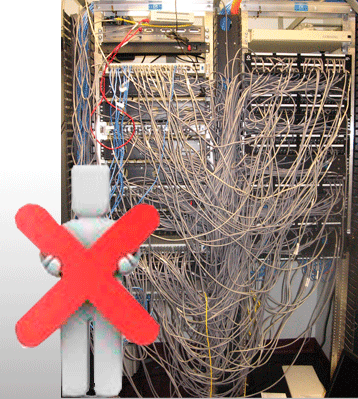
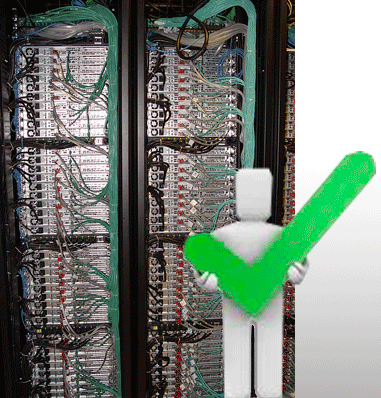
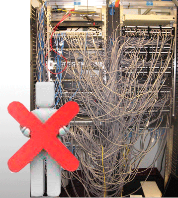
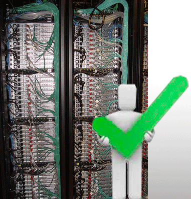
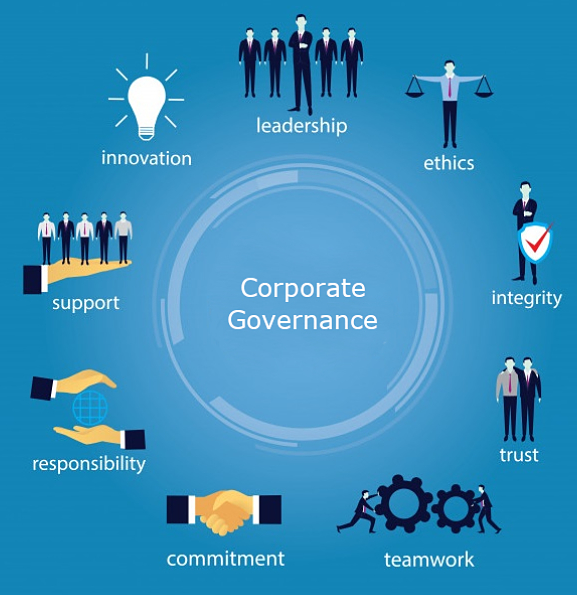

EL GOBIERNO DE TI DENTRO DE LAS EMPRESAS
| SIN GOBIERNO DE TI | CON UN BUEN GOBIERNO DE TI |
|  |  |
EL GOBIERNO DE TI DENTRO DE LAS EMPRESAS
| SIN GOBIERNO DE TI | CON UN BUEN GOBIERNO DE TI |
|  |  |

Es el conjunto de responsabilidades y prácticas ejecutadas por la junta directiva y la administración de una empresa, para proveer una dirección estratégica para el negocio.
Es una parte integral del Gobierno Corporativo, definido como el sistema mediante el cual se dirige y controla el uso actual y futuro de las tecnologías de la información (ISO/IEC 38500 Corporate Governance of Information Technology)
Veamos un video sobre Gobierno TI
Obra publicada con Licencia Creative Commons Reconocimiento Compartir igual 4.0